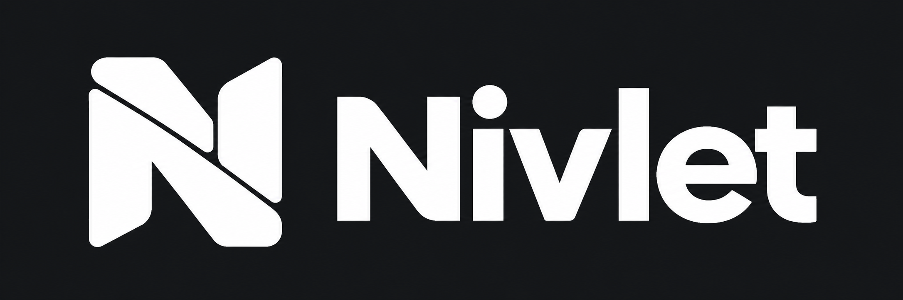

Nivlet · Folded shelf
An N that tucks into itself. Logo and favicon exploration · 30 October 2026
 Primary logo · transparent PNG on a light surface
Primary logo · transparent PNG on a light surface

Reverse logo · opaque charcoal background
16 px
32 px
48 px
96 px
160 px
The same favicon artwork at actual CSS sizes